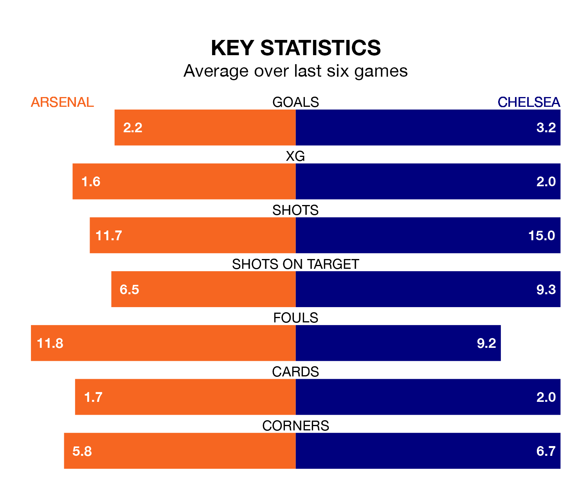

Arsenal host Chelsea in Tuesday's late match at the Emirates Stadium looking to bounce back from defeat last time out in the Premier League.
The Gunners, who sit second in the league after 32 games, fell to a 2-0 home defeat to Aston Villa on April 14.
They face a Chelsea side who picked up a win in their last match, a 6-0 victory against Everton, and who sit ninth in the table.
With 75 goals in 32 games so far this season, Arsenal are the league's second-highest scorers with 2.3 goals per game. And they are conceding fewer than average, letting in 26 goals at a rate of 0.8 per game.
Chelsea are also above average scorers, with 2.0 goals per game, compared to a league average of 1.6. They have conceded 1.7 goals per game.
In David Raya, the Gunners can rely on one of the league's safest pair of hands. He has kept 12 clean sheets in his 26 appearances this season, and no 'keeper has prevented the opposition scoring more often in the Premier League.
In the Blues' net, Robert Sánchez has three clean sheets in 16 games. He has conceded a goal every 65 minutes, 70% more often than the 111 minutes between goals for Raya Martin.
In the last 10 years, Arsenal and Chelsea have played each other on 27 occasions. Arsenal won 11 of them, Chelsea eight, and they drew eight times.
On average, the Gunners scored 1.4 goals and the Blues 1.3 in those matches.
Their last meeting was on October 21, when they played out a 2-2 draw.
The hosts are in good form in the Premier League, with four wins and a draw from their last six games.
With three wins and three draws over that period, the away team's form is slightly worse – they have taken 12 points from 18, compared to Arsenal's 13.
Updated: 15:40 (UTC), 18/04/24